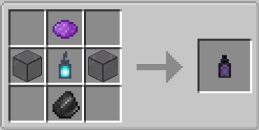

👾👾👾👾 Migueloncio1793 presenta, con ayuda de Minecraft Java, MCreator y Blockbench 👾👾👾👾
👾 Oscurium 👾
Migueloncio1793 CREATION™ 🌐 OPERATIVO 🌐 Versión Forge 1.20.1
⚒ FORGE EXPERIENCE ⚒
🎮 Este es un mod que va sobre una nueva dimensión con sus bosses, herramientas, hechizos y más. Vamos a empezar… 💎👾💎
🎮 Pasos para jugarlo: Primero tiene que estar en el servidor de discord, ahí habrá un apartado para descargar el mod. También en Novedades podrá ver todas las nuevas actualizaciones y arreglos de bugs.


📄 WIKI 📄
Enderman Essence: Este es un nuevo item parecido a la perla de ender. Para poder conseguirla necesitas matar a un Enderman, y con un 10% de probabilidad te soltará esta esencia.

Dark Lantern: Está lámpara obviamente no emite ningún tipo de luz, solo sirve para esta mesa y para decorar.

Dark altar: En esta nueva mesa tendrás que añadir tres esencias de Enderman y una lámpara oscura para invocar al nuevo miniboss, el Dark Golem.

Dark Golem: Este es el miniboss que sale al invocarlo con el altar oscuro. Y tiene estas características:
- Vida: 150pts.
- Experiencia al morir: 20pts.
- Velocidad de movimiento: 0,15
- Altura del paso: 1
- Rango de seguimiento: 16 bloques
- Rango de rastreo: 64 bloques
- Fuerza de ataque: 20pts.
- Protección de armadura: 3pts.
- Retroceso de ataque: 0,8pts.
- Resistencia al retroceso: 1,5pts.
- Es inmune a las flechas, al daño por caída y al ahogamiento.

Dark Essence: Este item lo soltará el Dark Golem al morir, y se podrá usar en la mesa de herrería para poder mejorar tu arma de netherita un 50%.

Dark rod fragment: Este mineral lo suelta el Dark rod fragment ore, y solo se puede fundir en un alto horno.

Dark rod: Para hacer esta Dark rod se necesitan cuatro Dark rod fragment.

Cursed sword: Está es una nueva espada. Y tiene estas características:
- Eficiencia: 12pts.
- Encantabilidad: 22pts.
- Daño del ataque: 12pts.
- Velocidad de ataque: 19,2pts.
- Durabilidad: 3046pts.

Cursed pickaxe: Este es un nuevo pico. Y tiene estas características:
- Eficiencia: 13,5pts.
- Encantabilidad: 22pts.
- Daño del ataque: 9pts.
- Velocidad de ataque: 18pts.
- Durabilidad: 3046pts.

Cursed axe: Está es una nueva hacha. Y tiene estas características:
- Eficiencia: 13,5pts.
- Encantabilidad: 22pts.
- Daño del ataque: 10pts.
- Velocidad de ataque: 18pts.
- Durabilidad: 3046pts.

Cursed hoe: Está es una nueva azada. Y tiene estas características:
- Eficiencia: 13,5pts.
- Encantabilidad: 22pts.
- Daño del ataque: 1,5pts.
- Velocidad de ataque: 18pts.
- Durabilidad: 4062pts.

Cursed armor: Está es una nueva armadura llamda Cursed armor. Y tiene estas características:
- Durabilidad total: 55pts.
- Reducción de daño del casco: 4pts.
- Reducción de daño de la pechera: 12pts.
- Reducción de daño de los pantalones: 9pts.
- Reducción de daño de las botas: 4pts.
- Encantabilidad: 22pts.
- Dureza: 4,5pts.
- Resistencia al empuje: 0,15pts.


Cursed flint and steel: Este mechero sirve para abrir el portal a la Deep Void

Mimetization Cristal: Al hacer click derecho con este cristal te haces invisible durante 10s

Obscurita ingot y Obscurita nugget: El Obscurita ingot se hace fundiendo en un alto horno un Raw Obscurita. Y la Obscurita nugget se hace como cualquier otr pepita


Cursed armor: Está es una nueva armadura llamada Obscurita armor. Y tiene estas características:
- Durabilidad total: 22pts.
- Reducción de daño del casco: 2pts.
- Reducción de daño de la pechera: 6pts.
- Reducción de daño de los pantalones: 5pts.
- Reducción de daño de las botas: 2pts.
- Encantabilidad: 13pts.
- Dureza: 2,25pts.
- Resistencia al empuje: 0,125pts.
- Efectos: Quita la ceguera y añade visión nocturna.


💡 IDEAS 💡
Las ideas que presentéis para el mod, tienen que pasar este filtro, sino sus ideas no volverán a ser valoradas:
💡Obligatorio📌: Cuando vayas a enviar una idea tendrá que poner de asunto su nombre de usuario de Minecraft.
💡Importante📌: De momento las ideas tiene que ser básicas, ya que el mod acaba de empezar.
💡Primera regla📌: La idea no podrá ser de más de 50 palabras por temas técnicos (máximo te puedes pasar 10 palabras), sino se rechazará sin mirarla.
💡Segunda regla📌: No se pueden presentar ideas de cosas obscenas, oscuras, o ideológicas que influyan en decisiones reales y cambio de perspectiva de la vida real.
💡Tercera regla📌: Sí o sí tiene que ser cosas que tengan que ver con la idea principal del mod Oscurium.
💡Cuarta regla📌: Sí esa idea ya ha sido rechazada no se podrá presentar nuevamente.
💡Quinta regla📌: Si se envían chorradas o cosas que no tengan que ver con aportar ideas interesantes y beneficiosas para el desarrollo del mod, serán descartadas.
💡Sexta regla📌: Si ya hay 20 ideas no se aceptará ni se leerá ninguna otra hasta que se complete el 50% de las que ya hay.
Para poder aportar ideas entre en el apartado de ideas de Discord.
♻ ACTUALIZACIONES ♻
Aquí se pondrá la versión del mod y su actualización:
♻ Versión 1.2.4: Se han añadido dos logros, “Cursed Armour” (se da cuando tienes toda la armadura maldita y te entrega el ítem “Cursed Flint”) y “Cursed Tools” (se da cuando tienes todas las herramientas malditas y te entrega el ítem “Cursed Steel”), también se ha añadido el “Cursed flint and steel” y su crafteo. Además se ha agregado la dimensión “Deep void”, se entrá en ella al usar el nuevo mechero en el portal grande de la ancient city, en él solo spawnean endermans, y los bloques son el bloque de sculk y la “Deepsculk”, un nuevo bloque que se rompe con la azada y te da experiencia.
♻ Versión 1.1.9: Se han añadido las herramientas de “Cursed pickaxe”, “Cursed axe” y “Cursed hoe”; también se ha añadido la armadura maldita, y se ha añadido todos los crafteos de lo todo lo dicho
♻ Versión 1.1.5: Se ha añadido el bloque de “Dark rod fragment ore”, los minerales “Raw dark rod fragment”, “Dark rod fragment” y el ítem “Dark rod”. También se a cambiado los crafteos de “Dark lantern”, “Dark altar” y el de “Cursed sword”
♻ Versión 1.0.9: Se ha añadido el “Dark golem”, el “Dark altar”, todas las esencias y la lámpara. También se han arreglado varios bugs y errores de modelos de texturas.